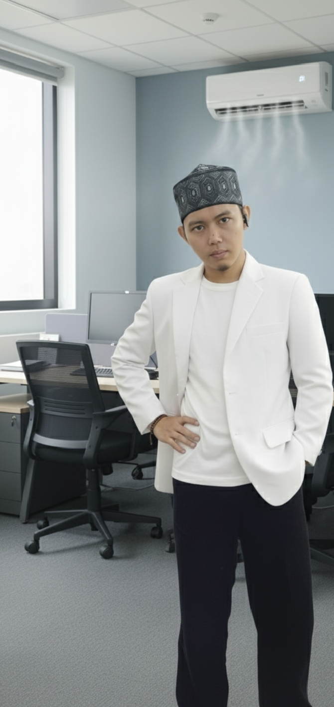

Profesional yang berorientasi pada detail dengan latar belakang pengalaman operasional luas dan keahlian teknis di bidang desain serta administrasi.

Pendidikan Terakhir
Lulusan Tahun 2015/2016
Pendidikan di lingkungan Madrasah menguatkan etos kerja saya melalui disiplin tinggi dan integritas moral.
Perjalanan karir saya dari operasional lapangan hingga teknis kreatif memberikan perspektif yang luas dalam bekerja.
Saya siap beradaptasi dengan cepat di lingkungan kerja baru dengan bekal kedisiplinan dan kemauan belajar yang tinggi.
Pengalaman mengelola operasional pelayanan pelanggan secara langsung dengan tingkat kesibukan tinggi.
Bertanggung jawab pada lini produksi manufaktur dengan target harian yang disiplin.
Melayani cetak, edit foto menggunakan Photoshop/Corel Draw, dan penjualan elektronik.
Memberikan jasa servis ringan dan penjualan produk telekomunikasi seluler.
Pengalaman manajemen ritel dasar dan pelayanan masyarakat lokal.
Mahir mengetik cepat menggunakan 10 jari untuk efisiensi input data.